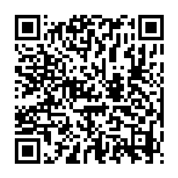

📷 Juega la misión en tu teléfonoEl adjetivo es la palabra que acompaña al sustantivo para describirlo, calificarlo o determinarlo. Son los colores de nuestra lengua: nos dicen cómo son, cómo están o a quién pertenecen las cosas.
✅ Como el monstruo del laboratorio: cada adjetivo («verde y feliz») cambia por completo su descripción.
| Familia | ¿Qué hace? | Ejemplos |
|---|---|---|
| ✨ Calificativos | Expresan una cualidad, defecto o característica: tamaño, color, forma, estado. | casa bonita, cielo azul, niño alegre |
| 📌 Determinativos | Limitan o precisan el significado: distancia, pertenencia o cantidad. | mi libro, este carro, tres gatos |
| Clase | Indican… | Ejemplos |
|---|---|---|
| 👇 Demostrativos | Distancia o ubicación | este, ese, aquel |
| 🎒 Posesivos | Pertenencia o posesión | mi, tu, su, nuestro |
| 🔢 Numerales | Cantidad EXACTA u orden | un, dos, tres, primer, medio |
| ❓ Indefinidos | Cantidad IMPRECISA | algunos, muchos, pocos |
| Tipo | Se forma con | Ejemplo |
|---|---|---|
| ⬆️ Superioridad | más + adjetivo + que | más lindo que |
| ⬇️ Inferioridad | menos + adjetivo + que | menos lindo que |
| 🟰 Igualdad | tan + adjetivo + como | tan lindo como |
El adjetivo copia el género (masculino/femenino) y el número (singular/plural) del sustantivo: gato negro, gata negra, árboles altos. Algunos adjetivos tienen una sola forma para ambos géneros: niño inteligente, niña inteligente.
| Frase | Análisis | Respuesta |
|---|---|---|
| casa bonita | Expresa cualidad | Calificativo |
| este carro | Indica distancia | Demostrativo |
| tres gatos | Cantidad exacta | Numeral |
| más alto que Pedro | Compara dos seres | Comparativo de superioridad |
| altísimo | Cualidad al máximo | Superlativo |
| las montañas altas | Femenino plural + femenino plural | Concordancia correcta ✔ |
| Error | Por qué está mal | Lo correcto |
|---|---|---|
| Confundir las dos familias | «"Rojo" y "azul" son determinativos». Los colores expresan CUALIDAD. | Rojo y azul son calificativos ✔ |
| Creer que «muy rápido» es comparativo | No compara con nadie: lleva la cualidad al máximo. | «Muy rápido» es superlativo ✔ |
| Romper la concordancia | «Las montañas alto» mezcla plural femenino con singular masculino. | Las montañas altas ✔ |
| Posesivos que «señalan lejos» | «Mi y tu indican distancia». La distancia es de los demostrativos. | Mi/tu = pertenencia · este/aquel = distancia ✔ |
| Indefinidos con cuenta exacta | «"Muchos" dice cuántos exactamente». Da una cantidad vaga. | Exacto = numeral · impreciso = indefinido ✔ |
| Columna A | Columna B |
|---|---|
| 1. ____ Grado positivo | A. Cuando son varios |
| 2. ____ Grado comparativo | B. Dice lo que ya se sabe de la cosa: la blanca nieve |
| 3. ____ Grado superlativo | C. La cualidad tal cual, sin comparar |
| 4. ____ Femenino | D. La palabra que el adjetivo acompaña |
| 5. ____ Plural | E. La cualidad en su punto más alto |
| 6. ____ Singular | F. Cuando es uno solo |
| 7. ____ Concordancia | G. Acompaña al nombre sin decir cómo es |
| 8. ____ Epíteto | H. Compara la cualidad entre dos |
| 9. ____ Determinativo | I. Que el adjetivo vaya igual que su nombre |
| 10. ____ Sustantivo | J. El que va con «la» |
| Actividad | Lugar | Valor | Nota obtenida | Observación |
|---|---|---|---|---|
| Copió los contenidos de este material en su cuaderno de Español. | Tarea en el hogar | 100 | ||
| Resolvió la sección «Ponte a Prueba» directamente en esta ficha. | Tarea en el aula, un día antes del examen | 100 | ||
| Escribió oraciones y descripciones con adjetivos de práctica en su cuaderno. | Tarea en el aula | 100 | ||
| Prueba impresa realizada en el aula. | Evaluación en el aula | 100 | ||
| Promedio nota final → | % | |||
Recuerde que ya aprendió a sacar el promedio: sume el total del valor obtenido y divídalo entre cuatro. El resultado será su nota final. Perderá puntos si no completa el trabajo, si su letra no es legible o si escribe con faltas de ortografía.
Esta hoja se imprime suelta: es solo para el docente o para la autoevaluación guiada.